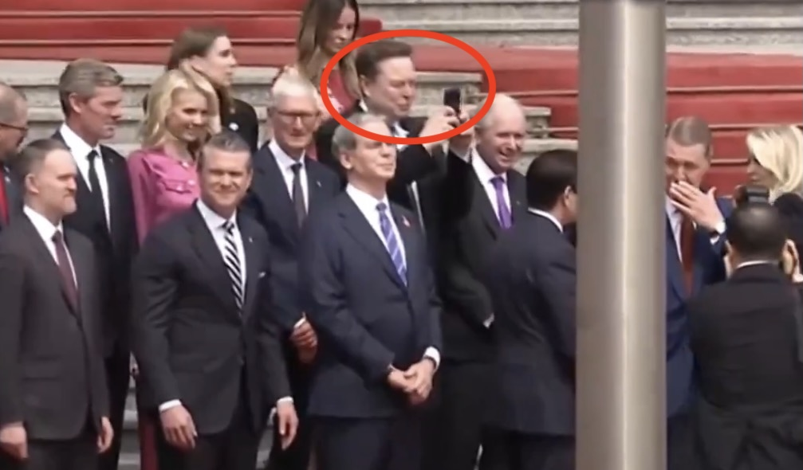
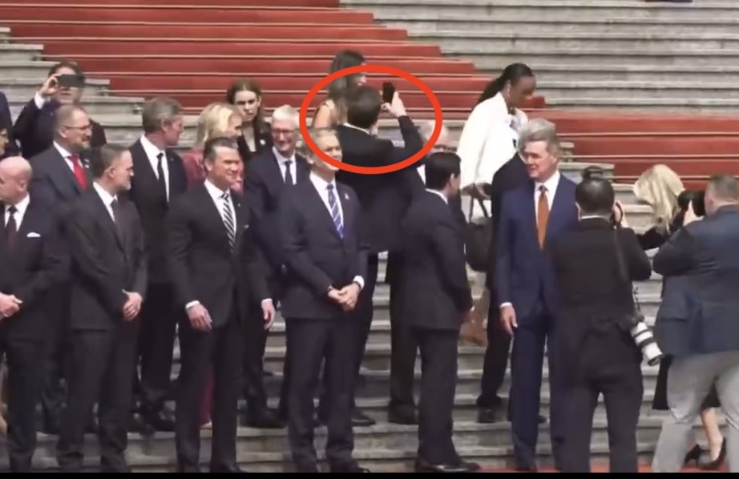

孙悟元 ヾ(≧▽≦*)o 喵！
@wuyuandev
@turningpointjpn Obviously, he has a spirit of daring to break conventions. Very few people would start posting on Twitter during a group photo, but he did it anyway.
That willingness to defy convention has undoubtedly helped his career development.


TotalNewsWorld
@turningpointjpn
イーロン・マスク氏、北京で勝手な行動を取り始めてしまう🤣
イーロン・マスクが、習近平国家主席主催のトランプ大統領歓迎式典で思わずスマホを取り出し撮影。
きっちり並ぶ米代表団の中で、好奇心を抑えきれない“マスクらしさ”が垣間見える一幕となった。 https://t.co/0VBoOdZI2o